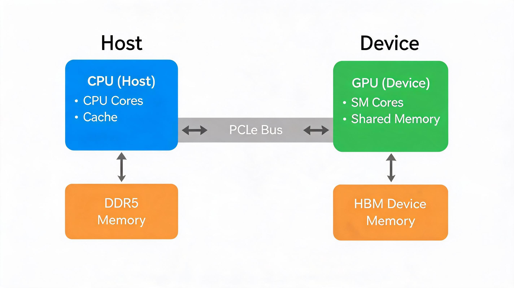
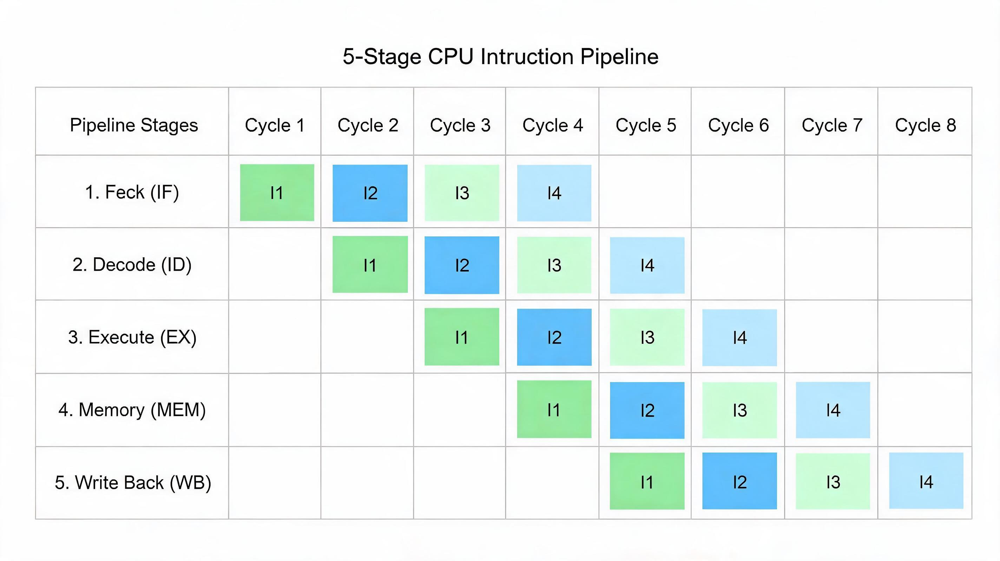
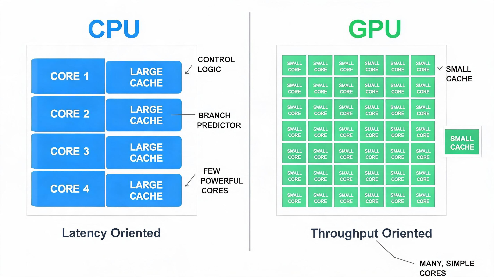
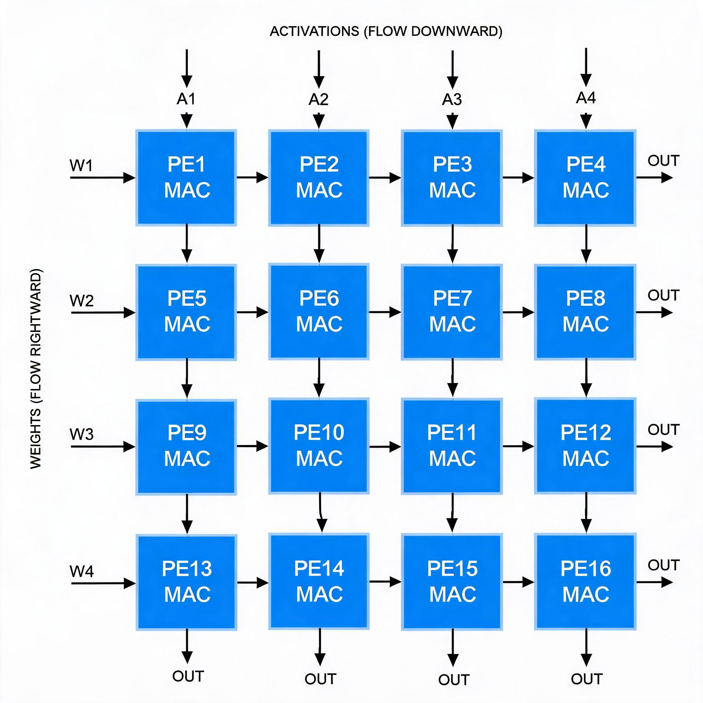
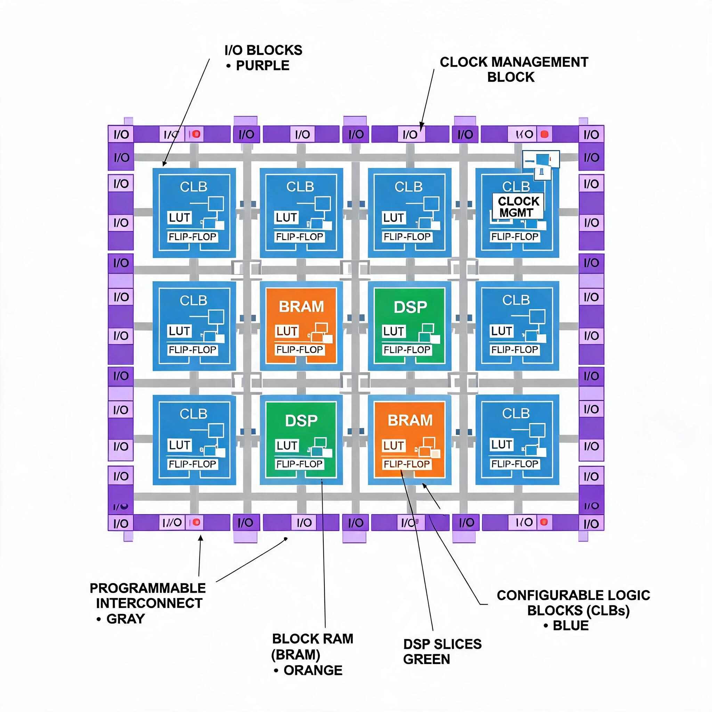
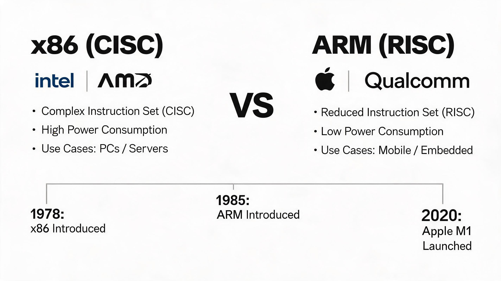
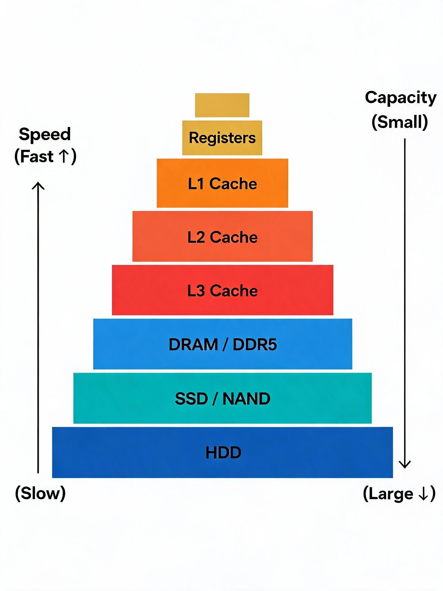
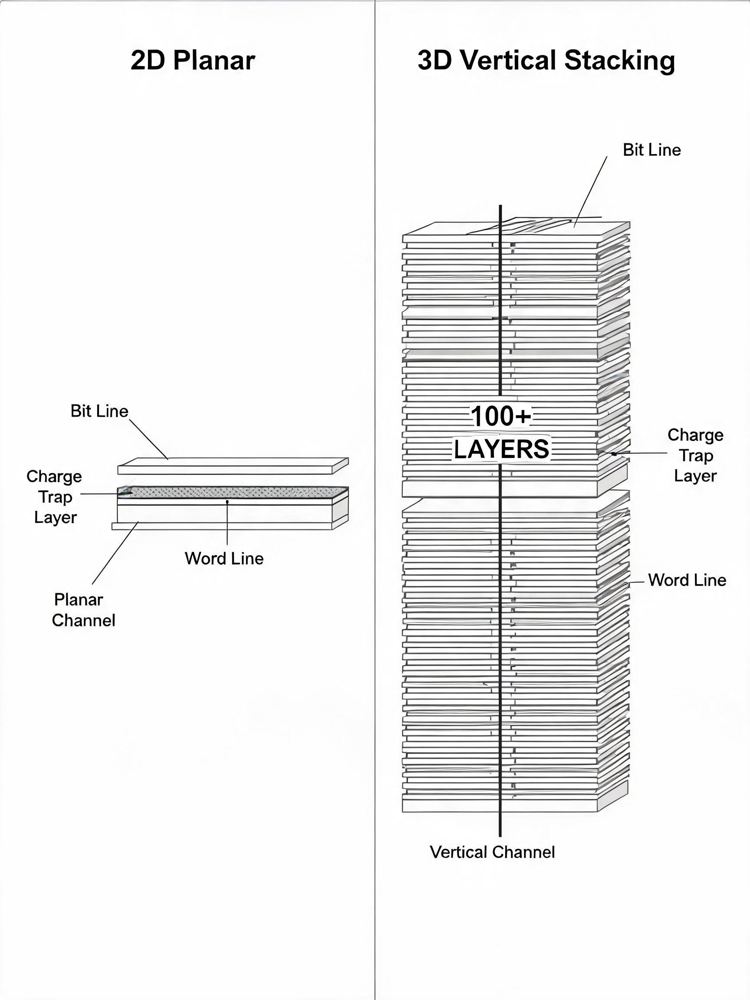
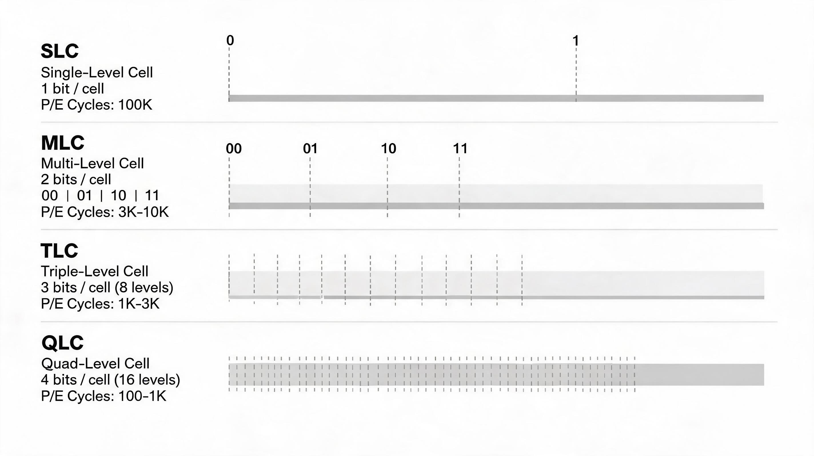

算力系统全景
当你用手机刷视频、在电脑上打字、或者让 ChatGPT 帮你写一篇论文的时候，背后都在发生一件事：计算。负责执行这些计算的整套硬件系统，就是"算力系统"。
算力系统的核心问题只有一个：怎么又快又省地把数据处理完。
为了回答这个问题，人类设计了极其精密的硬件架构。这篇文章会从头讲起：芯片是什么、CPU 和 GPU 有什么区别、x86 和 ARM 是什么关系、DDR5 内存为什么比 DDR4 快、SSD 固态硬盘里面的 NAND 是怎么工作的……
不需要任何前置知识，跟着走就行。
芯片（Chip），也叫集成电路（Integrated Circuit, IC），是一块指甲盖大小的硅片，上面刻了数十亿到数千亿个晶体管。晶体管本质上是一个微小的电子开关，只有"开"和"关"两种状态，对应数字世界里的 0 和 1。
你可以把芯片想象成一个超大规模的开关网络：几十亿个开关按照特定方式连接在一起，通过控制每个开关的开/关状态，就能执行加法、比较、存储、传输等各种操作。这就是"计算"的物理本质。
根据功能不同，芯片可以分为很多类型：
| 芯片类型 | 功能 | 典型代表 |
|---|---|---|
| 处理器芯片 | 执行计算指令，相当于"大脑" | Intel Core、Apple M4、NVIDIA H100 |
| 存储芯片 | 临时或长期保存数据 | DDR5 内存条、NAND 闪存 |
| 通信芯片 | 负责数据传输 | Wi-Fi 芯片、5G 基带芯片 |
| 电源管理芯片 | 控制电压和电流 | 手机里的 PMIC |
我们这篇文章重点关注的，是处理器芯片和存储芯片这两大类。
一个完整的算力系统，从上到下可以分为很多层。你的应用程序在最顶层，物理电路在最底层，中间隔着操作系统、编译器、指令集等多个抽象层。西安交通大学任鹏举老师的课程（L01）中，把这个结构画成了一张经典的"系统视角图"：
软件在上半部分，硬件在下半部分。指令集架构(ISA)是软件和硬件之间的"契约"——软件告诉硬件要做什么，硬件负责具体怎么执行。
从硬件的物理组成来看，一个算力系统的核心部件可以这样理解：
| 组件 | 角色 | 类比 |
|---|---|---|
| CPU（中央处理器） | 总指挥，负责逻辑判断和任务调度 | 公司的 CEO |
| GPU（图形处理器） | 并行计算专家，同时做大量简单任务 | 流水线上的 1000 个工人 |
| 内存（DRAM） | 临时存储正在使用的数据 | CEO 办公桌上的文件夹 |
| 缓存（Cache/SRAM） | CPU 旁边的超高速小仓库 | CEO 手边的便签纸 |
| SSD/HDD（存储） | 长期保存数据 | 公司的地下档案室 |
| 总线（Bus） | 连接所有部件的数据通道 | 公司里的走廊和电梯 |
它们之间的连接关系，构成了计算机系统的物理骨架。CPU 通过总线访问内存，内存从 SSD 加载数据，GPU 通过 PCIe 总线与 CPU 协作。课程 L03c 展示了一个典型的CPU-GPU 异构系统架构：

4.1 CPU 是什么？
CPU（Central Processing Unit，中央处理器）是计算机的"大脑"。它负责从内存中取出指令、理解指令、执行指令，然后把结果写回去。
CPU 执行指令的基本流程是一个四步循环，叫做指令周期：
指令执行四步走
1. 取指（Fetch）：从内存中读取下一条要执行的指令
2. 译码（Decode）：理解这条指令要做什么（加法？读取？跳转？）
3. 执行（Execute）：在 ALU（算术逻辑单元）中完成实际计算
4. 写回（Write Back）：把结果保存到寄存器或内存中
4.2 CPU 的内部结构
一个现代 CPU 里面主要有这些部件：
| 部件 | 功能 |
|---|---|
| ALU（算术逻辑单元） | 执行加减乘除、与或非等运算 |
| 控制单元（CU） | 指挥其他部件协同工作 |
| 寄存器（Register） | CPU 内部最快的存储，存放当前正在处理的数据 |
| 缓存（L1/L2/L3 Cache） | SRAM 制造的高速缓冲存储器 |
| 分支预测器 | 猜测程序接下来走哪条路，减少等待 |
4.3 CPU 的核心优化技术
课程 L03a 详细介绍了 CPU 提升性能的两大武器：
（1）流水线（Pipeline）
就像工厂的流水线一样，CPU 把指令执行过程分成多个阶段，每个阶段由不同的硬件单元负责。当第一条指令进入"译码"阶段时，第二条指令就可以进入"取指"阶段。这样，多条指令就能同时在不同阶段推进，大大提高了吞吐量。现代 CPU 的流水线通常有 10-20 级。

（2）乱序执行（Out-of-Order Execution）
如果指令 B 要等指令 A 的结果才能执行，那 CPU 不会傻等着。它会跳过 B，先执行后面不依赖 A 的指令 C、D。等 A 算完了，再回头执行 B。这就是"乱序执行"——指令的完成顺序可以和编写顺序不同，但最终结果保证一致。
CPU 的设计哲学：延迟优先（Latency-Oriented）
正如课程 L03c 所总结的，CPU 的设计目标是让单条指令尽可能快地完成。为此，CPU 花了大量芯片面积在缓存、分支预测器和复杂的控制逻辑上。翻开 Intel Pentium 4 的芯片照片，你会发现大部分面积被缓存和调度逻辑占据，真正做计算（ALU）的区域反而很小。
5.1 为什么需要 GPU？
想象你有一万道简单的一加一等于几的算术题。让 CEO（CPU）一个人做，就算他再聪明、算得再快，也得一道一道来。但如果你雇了 1000 个工人（GPU），每人分 10 道题同时算，整体速度就快了 1000 倍。
这就是 GPU 的核心思想：用大量简单的计算核心，同时处理大量简单的任务。
GPU（Graphics Processing Unit，图形处理器）最初是为了渲染 3D 图形而设计的。渲染一帧画面需要计算数百万个像素的颜色，每个像素的计算都很简单（无非是矩阵运算和插值），但数量极其庞大。CPU 处理这种"大量简单任务"效率很低，因为 CPU 只有几个核心，每个核心虽然很强大，但一次只能做一件事。GPU 则有几千个核心，虽然每个核心比较简单，但能同时工作。
5.2 CPU vs GPU：设计哲学的根本差异
| 特性 | CPU | GPU |
|---|---|---|
| 设计目标 | 最小化单任务延迟 | 最大化总吞吐量 |
| 核心数量 | 少（4-128 个） | 多（几千到几万个） |
| 时钟频率 | 高（~3-5 GHz） | 中（~1-2 GHz） |
| 缓存大小 | 大（数 MB） | 小（几百 KB） |
| 控制逻辑 | 复杂（分支预测、乱序执行） | 简单（无分支预测） |
| 擅长任务 | 逻辑判断、串行计算 | 矩阵运算、并行计算 |
课程 L03c 的总结非常精辟：
「CPU 为顺序代码设计，延迟优先，单条复杂指令快 10 倍以上；GPU 为并行代码设计，吞吐优先，单位时间执行指令数量多 10 倍以上。」
5.3 CUDA：让 GPU 不只画图
2006 年，NVIDIA 推出了 CUDA（Compute Unified Device Architecture），让程序员可以用类似 C 语言的方式给 GPU 写程序。从此，GPU 不再只是"图形处理器"，而是变成了通用并行计算引擎。今天，几乎所有 AI 训练、科学计算、密码破解都在用 GPU 完成。
CUDA 的编程模型叫做 SPMD（Single Program Multiple Data）：程序员写一份代码，GPU 把这份代码分配给成千上万个"线程"，每个线程处理不同的数据。从硬件视角看，这叫做 SIMT（Single Instruction Multiple Thread）——同一时刻，一组线程执行同一条指令，但操作不同的数据。

5.4 现代 GPU 不只是 CUDA 核心
今天的 GPU 已经远不只是成千上万个简单的 CUDA 核心了。现代 NVIDIA GPU 内部还有两类关键的专用单元：
Tensor Core（张量核心）：专门做矩阵乘法加速的硬件单元。一个 Tensor Core 可以在一个时钟周期内完成一次 4×4 矩阵乘加运算（MMA），效率远超普通 CUDA 核心。AI 训练和推理的绝大多数计算都是矩阵乘法，所以 Tensor Core 是现代 AI 性能的核心驱动力。NVIDIA H100 GPU 拥有 528 个 Tensor Core。
RT Core（光线追踪核心）：专门加速光线追踪（Ray Tracing）计算的硬件单元。光线追踪需要计算光线与场景中数千亿个三角形的交点，RT Core 通过专用的 BVH（层次包围盒）遍历和射线-三角形求交硬件，将实时光追从"不可能"变成"流畅"。
6.1 什么是 ASIC？
ASIC（Application-Specific Integrated Circuit，专用集成电路），顾名思义，是为某个特定应用场景量身定制的芯片。CPU 和 GPU 都是通用芯片，什么都能算；ASIC 只能算一种东西，但算得又快又省电。
6.2 ASIC 的经典案例
| ASIC 产品 | 专用场景 | 为什么需要专用芯片 |
|---|---|---|
| Google TPU | AI 推理（神经网络计算） | 大量矩阵乘法用脉动阵列实现，效率远超 GPU |
| 比特币矿机（如蚂蚁矿机） | SHA-256 哈希运算 | 只能挖矿，但挖矿速度是 GPU 的万倍 |
| Apple Neural Engine | iPhone 上的 AI 任务 | 人脸识别、语音助手等 AI 功能超低功耗运行 |
6.3 脉动阵列：ASIC 的杀手锏
课程 L05 详细介绍了一种在 ASIC 中广泛使用的架构——脉动阵列（Systolic Array）。它的核心思想是：把大量相同的处理单元（PE）排成阵列，数据像血液一样在阵列中有节奏地流动，每个 PE 在每个时钟周期都接收新数据、完成一次乘加运算、把结果传给下一个 PE。
脉动阵列特别适合矩阵乘法——而矩阵乘法正是神经网络计算的核心操作。Google TPU 的核心就是一个大型脉动阵列。
6.4 ASIC 的优缺点
优点：性能极高、能效极高（每瓦算力远超 GPU）。去掉了指令解码、分支预测等所有"多余"的控制逻辑，芯片面积几乎全部用来做计算。
缺点：开发成本极高（一次流片动辄几千万人民币），且一旦制造完成就无法修改。如果算法变了，整块芯片就废了。

7.1 什么是 FPGA？
FPGA（Field Programmable Gate Array，现场可编程门阵列）介于通用芯片和 ASIC 之间。它出厂时什么功能都没有，但你可以通过写入配置文件来改变芯片内部的电路连接，让它实现你想要的任何逻辑功能。
课程 L06 详细解释了 FPGA 的工作原理：FPGA 内部包含大量的查找表（LUT）、触发器（Flip-flop）和可编程互连线。一个 n 输入的 LUT 可以实现任意 n 元布尔函数——本质上就是一个 2^n 位的真值表。通过改变真值表的内容和互连线的连接方式，你就能让 FPGA 变成各种不同的电路。

7.2 FPGA vs ASIC vs CPU vs GPU
| 维度 | CPU | GPU | FPGA | ASIC |
|---|---|---|---|---|
| 灵活性 | ★★★★★ | ★★★★ | ★★★ | ★ |
| 性能 | ★ | ★★★ | ★★★★ | ★★★★★ |
| 能效 | ★ | ★★ | ★★★★ | ★★★★★ |
| 开发成本 | 低 | 低 | 中 | 极高 |
| 上市时间 | 即时 | 即时 | 数月 | 1-2 年 |
| 指令开销 | ~40% 能耗 | ~30% 能耗 | 几乎无 | 无 |
课程 L06 援引 Mark Horowitz (ISSCC 2014) 的研究指出：在 CPU 中，大约 40% 的数据通路能耗花在指令的取指、译码和寄存器文件访问上；GPU 中约 30% 的动态功耗也消耗在类似开销上。而 FPGA 和 ASIC 通过直接在硬件层面实现算法，几乎完全消除了这些开销。
8.1 什么是"架构"？什么是 ISA？
在讨论 x86 和 ARM 之前，先理解一个关键概念：指令集架构（ISA, Instruction Set Architecture）。
ISA 是软件和硬件之间签订的一份"合同"。它定义了处理器能理解的所有指令——比如"把两个数相加"、"从内存读取数据"、"跳转到另一段代码"。程序员用高级语言（C、Python）写代码，编译器把代码翻译成 ISA 规定的指令，硬件负责执行这些指令。
8.2 x86 的前世今生
x86 是 Intel 在 1978 年推出的处理器指令集架构，名字来自第一款芯片的型号：Intel 8086。后续的 80286、80386、80486 都沿用了这个架构，所以统称为"x86"。
8.3 x86 是 CISC 架构
x86 采用的是 CISC（Complex Instruction Set Computing，复杂指令集计算）设计哲学。CISC 的特点是：指令种类多、每条指令能做的事情很复杂。比如，一条 x86 指令可以完成"从内存取数→相加→存回内存"三个动作。
CISC 的设计初衷是让汇编程序员更容易写代码——指令越强大，需要的指令数就越少。但代价是硬件实现非常复杂，需要大量的译码逻辑。

9.1 ARM 的起源
ARM 最初是 Acorn RISC Machine 的缩写。1980 年代，英国公司 Acorn Computers 的工程师 Steve Furber 和 Sophie Wilson 受加州大学伯克利分校 RISC 研究的启发，在 1985 年设计了第一款 ARM 处理器。后来 ARM 独立成公司，改名为 Advanced RISC Machines。
9.2 ARM 是 RISC 架构
ARM 采用 RISC（Reduced Instruction Set Computing，精简指令集计算）设计哲学。与 CISC 相反，RISC 的特点是：指令种类少、每条指令只做一件简单的事、指令长度固定。
| 特性 | x86（CISC） | ARM（RISC） |
|---|---|---|
| 指令数量 | 数千条，越来越复杂 | 数百条，简洁精炼 |
| 指令长度 | 不固定（1-15 字节） | 固定（通常 4 字节） |
| 设计思路 | 一条指令干多件事 | 一条指令干一件事，简单高效 |
| 译码复杂度 | 高，需要复杂硬件 | 低，硬件简单 |
| 功耗 | 较高 | 极低 |
| 代表厂商 | Intel、AMD | Apple、Qualcomm、MediaTek |
| 应用场景 | PC、服务器 | 手机、平板、嵌入式设备 |
9.3 为什么 ARM 省电？
ARM 省电的核心原因是硬件简单。指令少且长度固定，意味着译码器不需要复杂的逻辑；没有那么多"强大但费电"的复杂指令，晶体管数量更少，漏电流更小。省电 = 硬件简单 = RISC。
2011 年，ARM 引入了big.LITTLE 架构：在同一个芯片上同时放"大核"（高性能，耗电多）和"小核"（低功耗，性能弱）。日常刷微信、听歌时只用小核，跑游戏、剪视频时才唤醒大核。这样既保证了峰值性能，又大幅延长了电池续航。今天几乎所有手机 SoC 都采用这种设计思路。
9.4 ARM 的商业模式：卖设计图，不卖芯片
ARM 公司自己不制造芯片，而是授权指令集和处理器设计方案给其他公司。Apple 用 ARM 的指令集设计了自己的 M 系列芯片（M1/M2/M3/M4），Qualcomm 设计了 Snapdragon 系列，华为设计了麒麟系列。这些芯片都"说"ARM 这门语言，但具体实现各不相同。
9.5 ARM 向 PC 和服务器进军
2020 年，Apple 发布了基于 ARM 架构的 M1 芯片，彻底打破了"ARM 只能跑手机"的刻板印象。M1 的性能和功耗表现震惊了整个行业。如今，ARM 已经开始在服务器和 PC 市场与 x86 正面竞争。
10.1 核心矛盾：速度、容量、价格，最多只能选两个
计算机存储面临一个不可能三角：
| 存储技术 | 速度 | 容量 | 价格 |
|---|---|---|---|
| 寄存器（Register） | 极快（~0.3 ns） | 极小（~1 KB） | 极贵 |
| SRAM（Cache） | 很快（~1 ns） | 小（~几 MB） | 很贵 |
| DRAM（内存） | 快（~100 ns） | 大（~几 GB 到 TB） | 中 |
| NAND（SSD） | 中（~100 μs） | 大（~几 TB） | 低 |
| HDD（机械硬盘） | 慢（~10 ms） | 很大（~几 TB） | 极低 |
没有任何一种存储技术能同时做到"又快又大又便宜"。所以工程师们想出了一个聪明的办法：存储层级（Memory Hierarchy）——把多种存储技术分层堆叠，快的小的放在离 CPU 最近的地方，慢的大的放在远处。
课程 L04 对此的总结非常到位：
「存储层级的原理是：利用局部性原理（空间局部性和时间局部性），给程序员提供与最便宜技术同等容量、与最快技术同等速度的存储体验。」
10.2 局部性原理：存储层级能工作的根本原因
存储层级之所以有效，是因为程序运行时有两个天然规律：
时间局部性（Temporal Locality）：如果一个数据刚被访问过，那它很可能马上还会被再次访问。比如循环中的计数器变量。
空间局部性（Spatial Locality）：如果一个数据被访问了，那它附近的数据很可能也会被访问。比如数组中的相邻元素。
利用这两个规律，CPU 会把经常使用的数据放在最快的 Cache 里，把最近用过的数据块从内存预先搬到 Cache 里。这样，大多数时候 CPU 都能在最快的存储中找到需要的数据。

10.3 速度差距：CPU 和内存之间的"鸿沟"
课程 L04 中有一张非常震撼的图：CPU-内存性能鸿沟：
从 1985 年到 2015 年，CPU 速度增长了约 10 万倍，而 DRAM 内存速度只增长了约 10 倍。两者的速度差距越来越大。这就是为什么缓存如此重要——没有缓存，CPU 大部分时间都在等内存。
10.4 延迟的人类尺度类比
各存储层级之间的速度差距是如此之大，以至于很难直接感知。让我们做一个类比：假设 L1 Cache 的访问时间 = 1 秒，那么：
| 层级 | 实际延迟 | 等比放大后 |
|---|---|---|
| L1 Cache | ~1 ns | 1 秒 |
| L2 Cache | ~5 ns | 5 秒 |
| L3 Cache | ~20 ns | 20 秒 |
| DRAM（内存） | ~100 ns | ~1.5 分钟 |
| SSD | ~100 μs | ~28 小时 |
| HDD | ~10 ms | ~115 天 |
从 L1 Cache 的 1 秒到 HDD 的 115 天——这就是 CPU 访问不同存储层级时能感受到的速度差距。L1 命中时"随手一拿就有"，访问 HDD 则要"等上小半年"。这就是为什么 CPU 设计者对缓存命中率如此执着：L1 的命中率通常超过 90%，L3 超过 99%。每 1% 的命中率提升，都意味着 CPU 少等"好几天"。
11.1 什么是 DDR？
DDR（Double Data Rate，双倍数据速率）是一种内存技术。名字里的"双倍"指的是：它在时钟信号的上升沿和下降沿各传输一次数据，相当于一个时钟周期传输两次，比传统的 SDR（Single Data Rate）快一倍。
DDR 已经经历了多代演进：DDR → DDR2 → DDR3 → DDR4 → DDR5。每一代都在频率、带宽和能效上有显著提升。
11.2 DDR5 vs DDR4：关键升级
| 规格 | DDR4 | DDR5 |
|---|---|---|
| 起始频率 | 2133 MHz | 4800 MHz |
| 最高频率 | 3200 MHz | 8400 MHz（规划） |
| 单根带宽 | 最高 ~25.6 GB/s | 最高 ~69.2 GB/s（DDR5-5600） |
| 工作电压 | 1.2V | 1.1V（更省电） |
| 单颗芯片密度 | 最大 16Gb | 最大 64Gb |
| 通道数（每 DIMM） | 1 个 64-bit 通道 | 2 个 32-bit 通道 |
| 纠错（ECC） | 需要额外芯片 | 片上 ECC（On-die ECC） |
DDR5 最关键的变化是双通道架构：DDR4 每根内存条只有一个 64-bit 数据通道，DDR5 把它拆成了两个独立的 32-bit 通道。这意味着 CPU 可以同时发起两个独立的内存请求，减少了排队等待的时间。
另一个重要的架构创新是PMIC（电源管理 IC）：DDR4 的电源管理电路在主板上，所有内存条共享；DDR5 把电源管理芯片直接搬到了内存条上，每根内存条独立管理自己的电压。这使得供电更精确、更高效，也为更高频率的稳定运行奠定了基础。
11.3 DDR5 在存储层级中的位置
DDR5 是主内存（Main Memory），也就是我们平时说的"内存条"。它比 CPU 内部的 Cache（SRAM）慢约 100 倍，但容量大得多（Cache 只有几 MB，内存可以有几十 GB）。它比 SSD 快约 1000 倍，但断电后数据会丢失（这就是为什么叫"易失性存储"）。
12.1 什么是 NAND？
NAND 闪存是一种非易失性存储技术——断电后数据不会丢失。名字中的 "NAND" 来自 "Not AND"（与非门），因为它的基本存储单元在电路结构上类似于 NAND 逻辑门。
你手里的 SSD 固态硬盘、U 盘、手机内置存储、SD 卡，里面装的都是 NAND 闪存芯片。
12.2 NAND 的基本原理
NAND 的每个存储单元是一个浮栅晶体管（Floating Gate Transistor）。简单说，它像一个可以"锁住电荷"的小容器：往里面充电子，代表"0"；把电子放掉，代表"1"。因为电荷被一层绝缘层困住，即使断电也不会跑掉，所以数据能长期保存。

12.3 SLC、MLC、TLC、QLC：每个格子存几位？
早期每个存储单元只存 1 位数据（0 或 1），叫做 SLC（Single-Level Cell）。后来工程师发现可以通过控制充入电荷的"量"，让一个单元区分出 4 个、8 个甚至 16 个状态，从而存储更多数据：
| 类型 | 每单元位数 | 擦写寿命 | 速度 | 成本 | 典型用途 |
|---|---|---|---|---|---|
| SLC | 1 bit | ~10 万次 | 最快 | 最贵 | 企业级、军工 |
| MLC | 2 bit | ~3000-10000 次 | 快 | 贵 | 高端消费级 |
| TLC | 3 bit | ~1000-3000 次 | 中 | 中 | 主流消费级 SSD |
| QLC | 4 bit | ~100-1000 次 | 慢 | 便宜 | 大容量存储盘 |
容量和寿命是一对矛盾：存得越多，区分状态就越难，出错概率越高，寿命越短。目前市面上主流 SSD 用的基本都是 TLC，性价比最高。
12.4 SSD 不只是 NAND：主控芯片的角色
SSD 固态硬盘并不是简单地把 NAND 芯片焊在电路板上。它内部有一个非常关键的部件——主控芯片（Controller），相当于 SSD 的"大脑"，负责管理所有 NAND 芯片并处理以下关键任务：
磨损均衡（Wear Leveling）：NAND 每个块的擦写次数有限（TLC 约 1000-3000 次）。如果不加管理，频繁修改的文件会让某些块先"累死"。主控芯片会把写入均匀分散到所有块上，让每块 NAND 的磨损程度保持一致，最大化整块 SSD 的寿命。
垃圾回收（Garbage Collection）：NAND 的写入规则很特殊——可以按页写，但必须按块擦除。当你"删除"一个文件时，数据并没有真的被擦除，只是被标记为"无效"。主控会在后台把有效数据搬走，然后整块擦除，腾出新的写入空间。
错误纠正（ECC）：NAND 在读写过程中会产生数据错误（尤其是 TLC/QLC），主控内置的 ECC 引擎可以自动检测和纠正这些错误。
SLC Cache：很多 TLC/QLC SSD 会划出一部分空间，让它临时工作在 SLC 模式（每个单元只存 1 位），以获得极高的写入速度。当这部分空间用完后，速度会降回 TLC/QLC 的真实水平——这就是为什么 SSD 在大文件拷贝时会出现"掉速"现象。
12.5 3D NAND：盖楼解决地不够用的问题
传统 NAND 是在硅片表面平铺存储单元（称为 2D NAND 或平面 NAND），容量受限于芯片面积。当制程缩小到极限时，工程师换了个思路：向上盖楼。
3D NAND 把存储单元像楼房一样一层层垂直堆叠起来。2025 年的主流产品已经堆到了 200+ 层。这意味着在同样的芯片面积上，可以多存几百倍的数据。

12.6 NAND vs DRAM：内存和硬盘的本质区别
| 特性 | DRAM（内存） | NAND（SSD） |
|---|---|---|
| 断电后 | 数据丢失 | 数据保留 |
| 速度 | ~100 ns | ~100 μs（慢 1000 倍） |
| 读写方式 | 按字节随机读写 | 按页读、按块擦除 |
| 寿命 | 几乎无限 | 有限（P/E 周期限制） |
| 成本 | 高 | 低 |
13.1 SRAM vs DRAM：两种完全不同的存储器
课程 L04 详细对比了两种关键存储技术：
SRAM（Static RAM，静态随机存储器）用 6 个晶体管构成一个存储单元，数据只要通电就能持续保持，不需要刷新。速度快（~1 ns 级别），但每个单元占面积大、成本极高。
DRAM（Dynamic RAM，动态随机存储器）用 1 个晶体管 + 1 个电容构成一个存储单元，数据以电荷形式存在电容中。电容会慢慢漏电，所以需要每隔几毫秒"刷新"一次（这就是"动态"的含义）。速度慢于 SRAM，但密度高、成本低。
13.2 三级缓存体系
现代 CPU 都内置了多级 Cache，从快到慢依次是：
| 缓存级别 | 典型大小 | 延迟 | 位置 |
|---|---|---|---|
| L1 Cache | 32-64 KB/核 | ~1 ns（~4 个时钟周期） | 每个核心独享 |
| L2 Cache | 256 KB-2 MB/核 | ~3-10 ns | 每个核心独享 |
| L3 Cache | 几 MB-几百 MB | ~10-30 ns | 所有核心共享 |
L1 最快但最小，L3 最大但最慢。CPU 先查 L1，没找到就查 L2，再没找到查 L3，最后才去内存（DRAM）取数据。每"漏掉"一级，延迟就增加一个数量级。
把前面所有内容拼在一起，一个完整的算力系统架构长这样：
graph TB
subgraph 处理器层
CPU["CPU\n(x86 / ARM)\n逻辑控制 · 串行计算"]
GPU["GPU\n(CUDA / SIMT)\n并行计算 · AI 训练"]
FPGA["FPGA\n(LUT · 可编程互连)\n灵活加速 · 原型验证"]
ASIC["ASIC / TPU\n(脉动阵列)\n极致性能 · 专用场景"]
end
subgraph 高速存储层
REG["寄存器 Register\n~0.3 ns · 数百字节"]
L1["L1 Cache (SRAM)\n~1 ns · 32-64 KB"]
L2["L2 Cache (SRAM)\n~5 ns · 256 KB-2 MB"]
L3["L3 Cache (SRAM)\n~20 ns · 数 MB-数百 MB"]
end
subgraph 主存储层
DDR5["DDR5 DRAM (内存)\n~100 ns · GB-TB 级"]
end
subgraph 持久存储层
SSD["SSD (NAND TLC/QLC 3D)\n~100 μs · TB 级"]
HDD["HDD (机械硬盘)\n~10 ms · TB 级"]
end
subgraph 互联层
PCIE["PCIe 总线\nCPU ↔ GPU / SSD"]
DDRBUS["DDR5 总线\nCPU ↔ 内存"]
NVME["NVMe 协议\nCPU ↔ SSD"]
end
CPU --- REG --- L1 --- L2 --- L3 --- DDR5 --- SSD --- HDD
CPU --- PCIE --- GPU
CPU --- DDRBUS --- DDR5
SSD --- NVME --- CPU面对不同的任务，应该选择什么类型的处理器？
| 任务类型 | 推荐处理器 | 原因 |
|---|---|---|
| 操作系统、数据库逻辑 | CPU | 需要复杂的逻辑判断和低延迟响应 |
| AI 训练（大规模） | GPU | 大量矩阵运算，天然并行 |
| AI 推理（数据中心） | ASIC（TPU） | 固定模型推理，极致能效 |
| 信号处理、通信基带 | FPGA / ASIC | 实时性要求高，算法相对固定 |
| 算法快速验证 | FPGA | 可反复重配置，比 ASIC 开发快 |
| 手机日常使用 | ARM CPU + GPU + NPU | 低功耗、高性能，异构集成 |
真实系统往往是异构的：一部 iPhone 里面有 ARM 架构的 CPU、GPU、NPU（ASIC）、DDR 内存、NAND 闪存，它们通过内部总线连接在一起协同工作。课程 L03c 展示的 CPU-GPU 异构架构就是这种趋势的缩影。
正如课程 L01 所指出的，算力系统设计的核心是软件/硬件协同设计：上层应用的需求决定了需要什么样的硬件架构，底层硬件技术的约束又反过来限制了能做什么。不同处理器类型的存在，本质上是因为不同类型的并行性（ILP、DLP、TLP）需要不同的硬件来挖掘。
| 术语 | 全称 | 一句话解释 |
|---|---|---|
| ISA | Instruction Set Architecture | 软件和硬件之间的"语言约定" |
| CISC | Complex Instruction Set Computing | 指令又多又复杂，x86 用的就是它 |
| RISC | Reduced Instruction Set Computing | 指令少而简单，ARM 用的就是它 |
| ILP | Instruction-Level Parallelism | 在一条指令流中找到可以并行执行的指令 |
| DLP | Data-Level Parallelism | 对一组数据执行相同操作（SIMD） |
| TLP | Thread-Level Parallelism | 多个线程同时执行 |
| SIMT | Single Instruction Multiple Thread | GPU 的执行模型：一条指令，多个线程同时执行 |
| SPMD | Single Program Multiple Data | CUDA 的编程模型：一份代码，多份数据 |
| LUT | Look-Up Table | FPGA 的基本单元，一个可编程的真值表 |
| PE | Processing Element | 脉动阵列中的基本处理单元 |
| SRAM | Static Random Access Memory | 不需要刷新的快速存储器，用于 Cache |
| DRAM | Dynamic Random Access Memory | 需要定期刷新的存储器，用于主内存 |
| DDR5 | Double Data Rate 5 | 第五代双倍速率内存标准 |
| NAND | NAND Flash | 非易失性闪存，SSD 使用的存储介质 |
| ECC | Error Correcting Code | 内存纠错码，自动检测和修复数据错误 |
| P/E | Program/Erase | NAND 的编程/擦除周期，决定闪存寿命 |
参考来源
- Red Hat — ARM 与 x86：有何区别？
- Kingston — 2D 与 3D NAND：SLC、MLC、TLC 和 QLC 闪存存储之间的差异
- ATP Electronics — DDR5 vs DDR4: Bandwidth, Frequency, On-Die ECC
- 阮一峰 — 为什么寄存器比内存快？
- 知乎 — GPU 工作原理解析
- 任鹏举，《嵌入式智能系统与新型计算架构》课程讲义 L01-L06，西安交通大学
- Bryant, R. E., & O'Hallaron, D. R. (2015). Computer Systems: A Programmer's Perspective (3rd ed.). Pearson.
- Hennessy, J. L., & Patterson, D. A. (2019). Computer Architecture: A Quantitative Approach (6th ed.). Morgan Kaufmann.